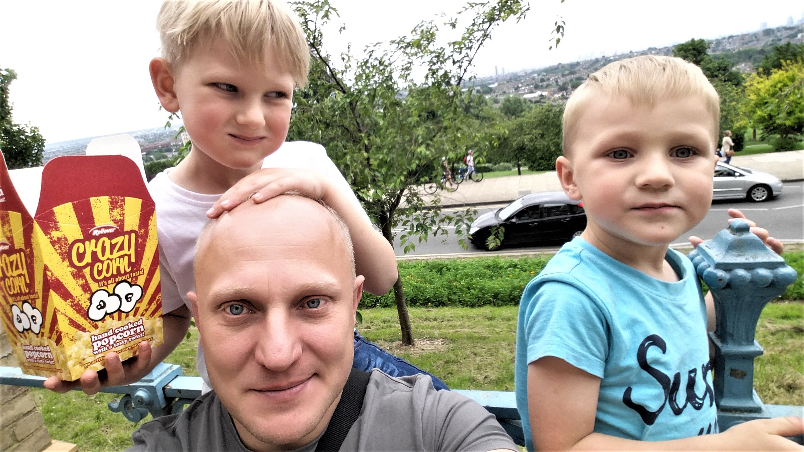

I, Igor Katz, am a personal assistant, manager, living in London, UK. I have an extensive experience as a manager and worked in this field for over 15 years. I'm very professional in what i do and have worked for many well known businessmans and polititians families from CIS countries. After my high school education, i moved to the UK, where i studied for the "First Cambridge Sertificate" in Hammersmith and West London colledge. At the same time i finished course in computer science. If was followed by the Higher National Diploma in Business Studies. I do like to extend boundaries of my knowledge, in 2010 i did the CCNA course. (Sisco sertification).
I'm very active and like to swim, go for a jogg or for a hike. Beside that i like to play voleyball and table tennis. I do read many books in English and Russian languages. Also i read many articles online. My topics are: hystory, technology and science.
